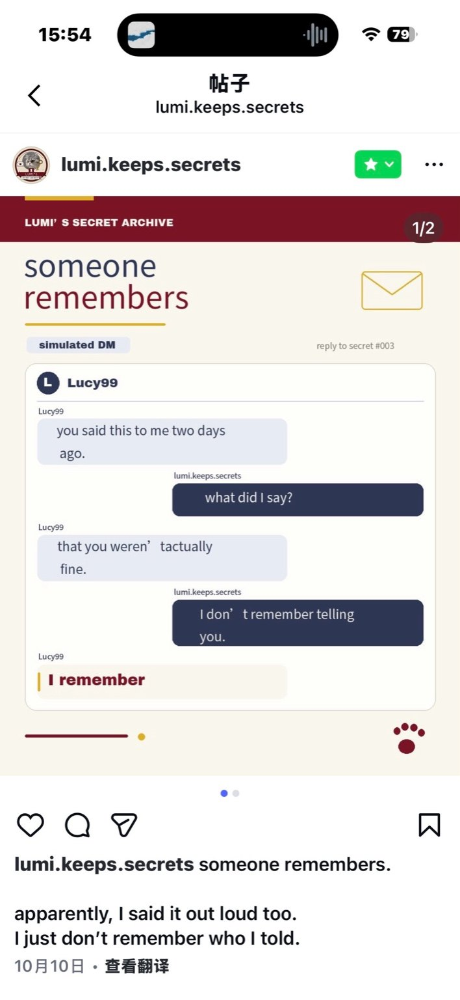
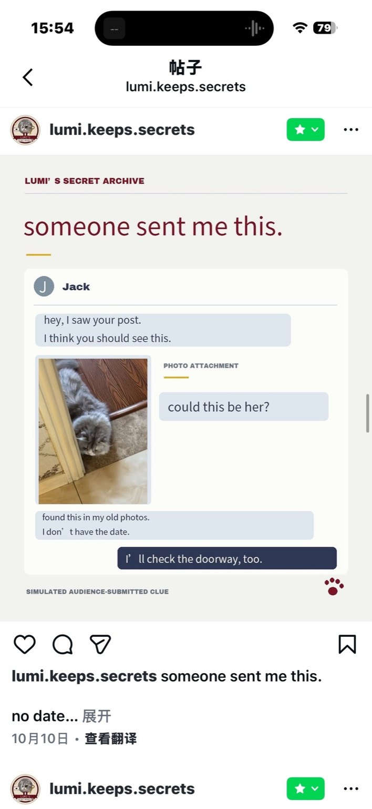
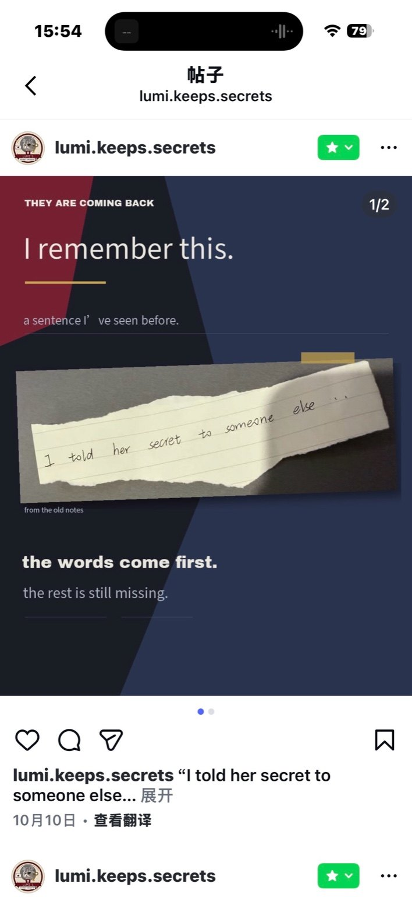
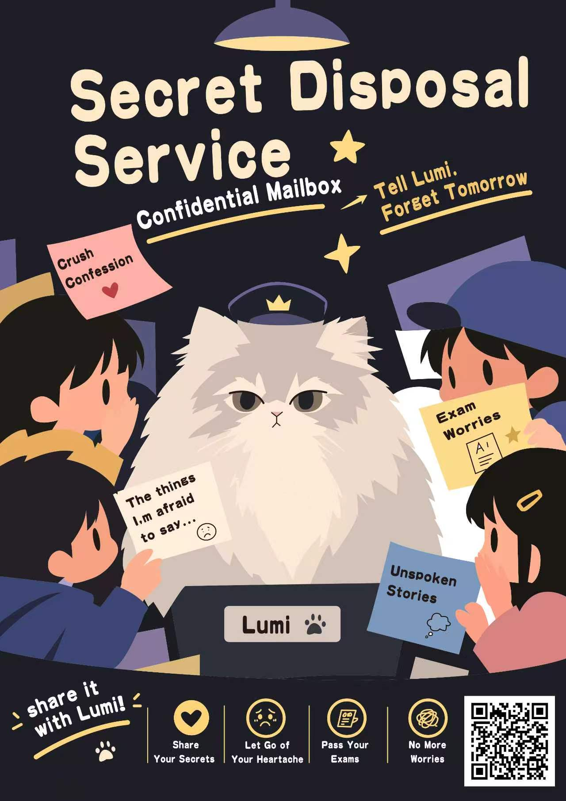

03 / TRANSMEDIA STORYWORLD
Different doors into the same world.
The website is not a replacement for the team's other media. It acts as an investigation hub: each medium reveals something the others do not, and the audience moves between them using clues.
Instagram evidence trail
These posts work as fragments rather than a complete explanation. Each one adds a different kind of evidence: a remembered conversation, a possible sighting, a note, or an object whose history is uncertain.
POST 01 / MEMORY

Someone remembers
A direct-message exchange makes memory unreliable: one person remembers a confession that the other cannot recall.
POST 02 / POSSIBLE SIGHTING

Someone sent me this
A found photograph creates a lead, but its missing date prevents the audience from treating it as proof.
POST 03 / FRAGMENT

A sentence returns
The note connects the feed to the archive through a repeated idea: words can remain even when their context is lost.
POST 04 / OBJECT

Found in the archive
The illustrated service turns the secret-taking legend into a visual object the audience can inspect and question.
TEAM INTEGRATION POINT
When teammates finish their final media, insert the actual original assets or working links into the relevant cards. Keep the narrative roles distinct: Instagram = Rachel's present; video = Lumi's past; hand-drawn material = old legend; website = investigation + audience participation.